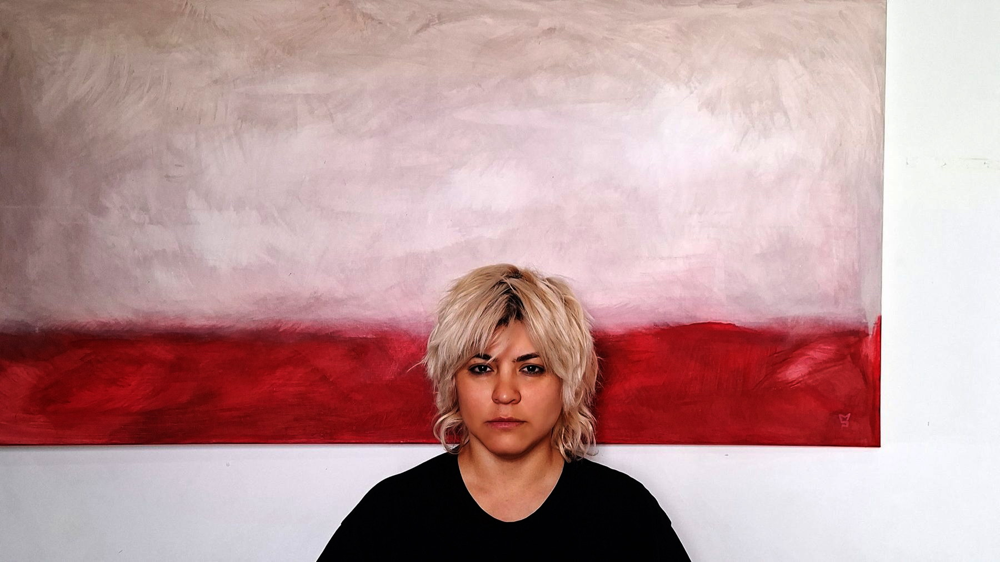
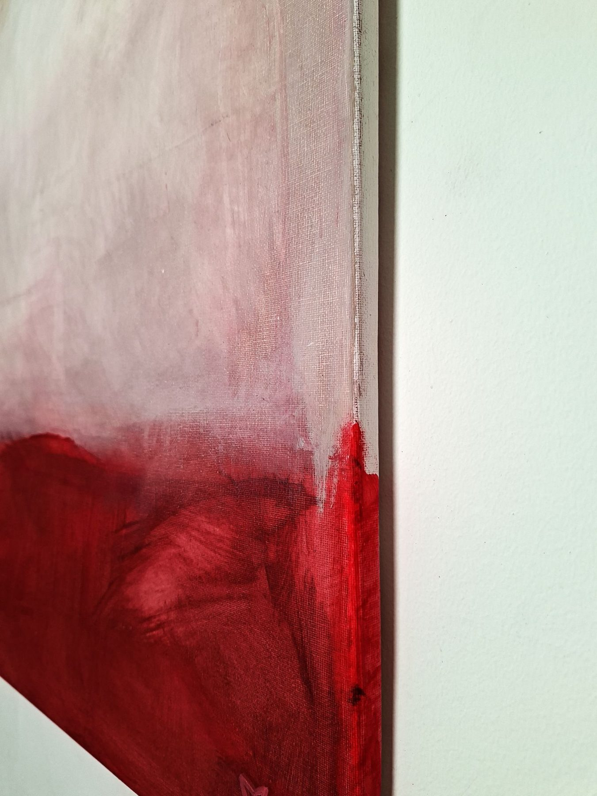

Dossier 2026
Gabriela Pérez
Pinto campos de color que se encuentran en una franja. Esa franja —no el color de arriba ni el de abajo— es el asunto de cada pieza.

León, España
mariaperez.art@gmail.com
mariaperezart.github.io/estudio
Dossier 2026
Pinto campos de color que se encuentran en una franja. Esa franja —no el color de arriba ni el de abajo— es el asunto de cada pieza.
León, España
mariaperez.art@gmail.com
mariaperezart.github.io/estudio
Statement
Pinto campos de color que se encuentran en una franja. Esa franja es el asunto de cada pieza.
Me interesa el instante anterior al reconocimiento: cuando todavía no sabes si lo que miras es un paisaje o una superficie. Ahí la mirada se detiene y tiene que decidir. Esa duda es el lugar que intento construir.
Soy autista. Esa forma de percibir —atención sostenida al detalle, a los patrones, a lo que no encaja— es la herramienta con la que trabajo una transición de color. No es el tema de la obra: es el método.
La paleta cambia con cada pieza. La estructura, no.
Biografía
Gabriela Pérez (Venezuela) vive y trabaja en León, España. Se formó como Técnico Superior Universitario en Diseño Gráfico en Mérida, Venezuela, y llegó a la pintura a los veinte años a través de un taller de la carrera. Antes de trabajar en estudio pintó muros en espacio público en Venezuela y en Tenerife. Su obra actual son campos de color en acrílico sobre lienzo, organizados en torno a una franja de transición entre dos superficies.
Trayectoria
Serie
Dos campos de color y la franja donde se tocan.
El procedimiento es el hilo que une la serie: una franja superior que se disuelve en una franja inferior de color distinto, formato horizontal de 140 × 70 cm, acrílico en veladuras sucesivas sobre lienzo sin enmarcar, con la trama textil visible como parte deliberada de la superficie y el color continuado sobre el canto del bastidor.
La paleta cambia con cada pieza. La estructura, no.

Obra
Esta obra nace de la idea de que todo espacio puede convertirse en un lugar para detenerse. A través de la materia y el color, busca abrir un territorio de contemplación donde cada persona pueda construir su propia experiencia.
Obra

Pinté esta obra como una invitación a explorar la relación entre el espacio y quien lo ocupa. Más que ofrecer respuestas, propone un lugar donde la calma y el silencio permitan que surjan nuevas preguntas.
Materia

Trabajo el acrílico en veladuras sucesivas. El color no se aplica: se acumula. La franja donde dos campos se encuentran es lo último que se resuelve, y es la razón de ser de cada pieza — no un borde, sino una zona de paso.
Contacto
León, España
mariaperezart.github.io/estudio
Imágenes en alta resolución, condiciones y disponibilidad, a petición.